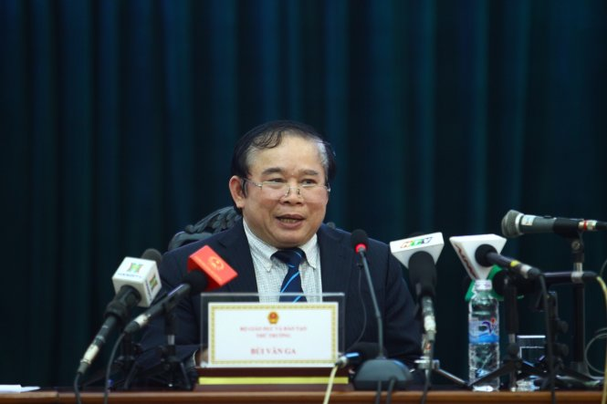

Phương án tổ chức kỳ thi trung học phổ thông Quốc gia năm 2017

Lần cập nhật cuối lúc Thứ tư, 05 Tháng 10 2016 10:40 Viết bởi Administrator Thứ tư, 28 Tháng 9 2016 00:00
Năm 2017, Bộ Giáo dục và Đào tạo (GDĐT) tiếp tục tổ chức Kỳ thi Trung học phổ thông (THPT) quốc gia lấy kết quả để xét công nhận tốt nghiệp THPT và làm căn cứ để tuyển sinh đại học, cao đẳng (ĐH, CĐ) hệ chính quy. Phương án cụ thể như sau:

Thứ trưởng Bộ GD-ĐT Bùi Văn Ga công bố phương án tổ chức kỳ thi THPT Quốc gia năm 2017
I. Tổ chức thi THPT quốc gia và xét công nhận tốt nghiệp THPT năm 2017
1. Tổ chức cụm thi
a) Mỗi tỉnh, thành phố trực thuộc Trung ương (gọi chung là tỉnh) tổ chức một cụm thi do sở GDĐT chủ trì dành cho tất cả các thí sinh của địa phương; các điểm thi được bố trí đảm bảo tạo thuận lợi tối đa cho thí sinh; các thí sinh tự do được lựa chọn địa điểm thi phù hợp.
b) Sở GDĐT các tỉnh bố trí cán bộ thực hiện các khâu tổ chức thi theo đúng quy chế.
c) Bộ GDĐT cử cán bộ, giảng viên từ các đại học, học viện, trường ĐH, CĐ (gọi chung là các trường ĐH, CĐ) đến các tỉnh để phối hợp, hỗ trợ tổ chức thi, nhất là các khâu coi thi và chấm thi.
2. Bài thi, hình thức thi, đề thi, thời gian làm bài thi và lịch thi
a) Bài thi
- Tổ chức thi 5 bài, gồm:
+ 3 bài thi độc lập: Toán, Ngữ văn, Ngoại ngữ.
+ 2 bài thi tổ hợp: Khoa học Tự nhiên (tổ hợp các môn Vật lí, Hóa học, Sinh học) và Khoa học Xã hội (tổ hợp các môn Lịch sử, Địa lí, Giáo dục công dân đối với Giáo dục THPT; tổ hợp các môn Lịch sử, Địa lí đối với Giáo dục Thường xuyên). Các bài thi tổ hợp có điểm từng môn thành phần (phục vụ xét tuyển sinh ĐH, CĐ theo khối thi truyền thống) và điểm toàn bài thi (phục vụ xét công nhận tốt nghiệp THPT và xét tuyển sinh ĐH, CĐ theo tổ hợp môn thi, bài thi mới).
- Thí sinh Giáo dục THPT thi 4 bài để lấy kết quả xét công nhận tốt nghiệp THPT, gồm 3 bài thi bắt buộc (Toán, Ngữ văn, Ngoại ngữ) và 1 bài thi tự chọn (bài thi Khoa học Tự nhiên hoặc bài thi Khoa học Xã hội). Với bài thi Ngoại ngữ, thí sinh có thể chọn thi một trong các thứ tiếng: Tiếng Anh, Tiếng Nga, Tiếng Pháp, Tiếng Trung Quốc, Tiếng Đức, Tiếng Nhật. Thí sinh có thể dự thi cả 5 bài thi; điểm bài thi tự chọn nào cao hơn sẽ được tính để xét công nhận tốt nghiệp THPT.
- Thí sinh Giáo dục Thường xuyên thi 3 bài để lấy kết quả xét công nhận tốt nghiệp THPT, gồm 2 bài thi bắt buộc (Toán, Ngữ văn) và 1 bài thi tự chọn (bài thi Khoa học Tự nhiên hoặc bài thi Khoa học Xã hội). Thí sinh có thể dự thi cả 4 bài thi; điểm bài thi tự chọn nào cao hơn sẽ được tính để xét công nhận tốt nghiệp THPT. Ngoài ra, thí sinh có thể thi thêm bài thi Ngoại ngữ để xét tuyển vào ĐH, CĐ nếu có nguyện vọng.
- Thí sinh đã tốt nghiệp THPT dự thi để lấy kết quả xét tuyển vào ĐH, CĐ có thể chọn thi các bài thi hoặc các môn thành phần của bài thi Khoa học Tự nhiên, bài thi Khoa học Xã hội, phù hợp với tổ hợp bài thi, môn thi xét tuyển vào ngành, nhóm ngành theo quy định của các trường ĐH, CĐ.
- Thí sinh được sử dụng kết quả thi THPT quốc gia để đăng ký xét tuyển vào các trường ĐH, CĐ hệ chính quy năm 2017 theo quy định trong đề án tuyển sinh được các trường ĐH, CĐ công bố công khai.
b) Hình thức thi
- Các bài thi Toán, Ngoại ngữ, Khoa học Tự nhiên và Khoa học Xã hội thi theo hình thức trắc nghiệm khách quan; mỗi thí sinh trong cùng phòng thi có một mã đề thi riêng; thí sinh làm bài thi trên Phiếu trả lời trắc nghiệm (Phiếu TLTN); kết quả làm bài của thí sinh trên Phiếu TLTN được chấm bằng phần mềm máy tính.
- Bài thi Ngữ văn thi theo hình thức tự luận.
c) Đề thi
- Đề thi gồm các câu hỏi ở các cấp độ cơ bản phục vụ mục đích xét công nhận tốt nghiệp THPT và các câu hỏi phân hóa phục vụ mục đích xét tuyển ĐH, CĐ.
- Đề thi cho mỗi môn thành phần của các bài thi Khoa học Tự nhiên, bài thi Khoa học Xã hội có 40 câu hỏi trắc nghiệm; đề thi của bài thi Toán, bài thi Ngoại ngữ có 50 câu hỏi trắc nghiệm. Mỗi câu hỏi trắc nghiệm có 4 phương án trả lời với duy nhất 1 phương án trả lời đúng.
- Đề thi bài thi Ngữ văn có phần Đọc hiểu và phần Làm văn.
d) Thời gian làm bài thi:
- Thời gian làm bài dành cho mỗi môn thành phần của các bài thi tổ hợp Khoa học Tự nhiên, Khoa học Xã hội: 50 phút.
- Bài thi Ngữ văn: 120 phút.
- Bài thi Toán: 90 phút.
- Bài thi Ngoại ngữ: 60 phút.
đ) Nội dung thi: Năm 2017, nội dung thi nằm trong Chương trình lớp 12 THPT; năm 2018, nội dung thi nằm trong Chương trình lớp 11 và lớp 12 THPT; từ năm 2019 trở đi, nội dung thi nằm trong Chương trình cấp THPT.
e) Lịch thi: Tổ chức thi 2 ngày trong tháng 6 năm 2017. Lịch thi cụ thể:
- Ngày thứ nhất:
+ Buổi sáng: thi Ngữ văn và Ngoại ngữ.
+ Buổi chiều: thi Toán.
- Ngày thứ hai:
+ Buổi sáng: thi bài thi Khoa học Tự nhiên.
+ Buổi chiều: thi bài thi Khoa học Xã hội.
3. Công bố kết quả thi và cấp Giấy chứng nhận kết quả thi
Sở GDĐT cập nhật kết quả thi lên hệ thống quản lý cơ sở dữ liệu chung của Bộ GDĐT, công bố kết quả thi và cấp cho mỗi thí sinh 1 Giấy chứng nhận kết quả thi.
4. Xét công nhận tốt nghiệp THPT
- Kết hợp sử dụng kết quả điểm 4 bài thi tốt nghiệp (đối với thí sinh Giáo dục THPT) hoặc 3 bài thi tốt nghiệp (đối với thí sinh Giáo dục Thường xuyên) với điểm trung bình cả năm lớp 12 và điểm ưu tiên, khuyến khích (nếu có) để xét công nhận tốt nghiệp THPT.
- Phương thức tính điểm xét tốt nghiệp: điểm các bài thi tốt nghiệp và điểm trung bình cả năm lớp 12 có tỷ lệ tương ứng 50 : 50.
- Điểm liệt của mỗi bài thi độc lập (theo thang 10 điểm): 1,0 điểm.
- Điểm liệt của mỗi môn thành phần (theo thang 10 điểm) của các bài thi tổ hợp: 1,0 điểm.
5. Quản lý cơ sở dữ liệu thi THPT quốc gia
a) Các thông tin của thí sinh đăng ký dự thi THPT quốc gia được cập nhật vào hệ thống quản lý dữ liệu chung của Bộ GDĐT. Mỗi thí sinh được cung cấp một mã số thí sinh và tài khoản để kiểm tra thông tin cá nhân, kết quả thi THPT quốc gia, kết quả tốt nghiệp THPT và đăng ký xét tuyển ĐH, CĐ.
b) Sở GDĐT sử dụng cơ sở dữ liệu chung để tổ chức thi và xét công nhận tốt nghiệp THPT cho thí sinh; cập nhật lên hệ thống kết quả học tập THPT, kết quả thi THPT quốc gia và kết quả xét công nhận tốt nghiệp THPT.
c) Các trường ĐH, CĐ truy cập, khai thác dữ liệu phục vụ công tác tuyển sinh.
II. Tổ chức tuyển sinh ĐH, CĐ hệ chính quy năm 2017
1. Quy định chung
- Bộ GDĐT ban hành Quy chế tuyển sinh ĐH, CĐ hệ chính quy, đảm bảo quyền tự chủ của các cơ sở giáo dục đại học theo định hướng tại mục II.2 dưới đây.
- Các trường ĐH, CĐ xây dựng đề án tự chủ tuyển sinh theo Quy chế tuyển sinh ĐH, CĐ hệ chính quy và công bố công khai.
- Các trường có thể tuyển sinh 1 hoặc 2 kỳ trong năm.
2. Các phương thức tuyển sinh
2.1. Xét tuyển dựa vào kết quả các bài thi THPT quốc gia
- Các trường công bố công khai tổ hợp các bài thi, môn thi của Kỳ thi THPT quốc gia được sử dụng để xét tuyển vào các ngành của trường trước khi thí sinh đăng ký dự thi.
- Các trường công bố công khai chỉ tiêu dành cho các tổ hợp xét tuyển khác nhau; trong đó, dành ít nhất 25% chỉ tiêu để xét tuyển theo các khối thi truyền thống (A, A1, B, C, D).
- Sau khi có kết quả thi, thí sinh được phép đăng ký nhiều nguyện vọng xét tuyển vào ngành/trường ĐH, CĐ và được sắp xếp các nguyện vọng theo thứ tự ưu tiên.
- Bộ GDĐT sử dụng phần mềm quản lý tuyển sinh để xác định danh sách thí sinh trúng tuyển với 1 nguyện vọng phù hợp nhất trong số các nguyện vọng mà thí sinh đã đăng ký xét tuyển. Danh sách này được công khai để các trường tham khảo, làm căn cứ tuyển sinh. Các trường có thể cân đối, điều chỉnh dựa vào các điều kiện thực tế của trường đã nêu trong đề án tự chủ tuyển sinh để quyết định danh sách thí sinh trúng tuyển chính thức.
- Trong thời hạn quy định của trường, thí sinh trúng tuyển phải khẳng định nhập học tại trường; trường có trách nhiệm cập nhật sớm nhất danh sách thí sinh đã khẳng định nhập học lên hệ thống quản lý dữ liệu chung để các trường khác cùng biết.
- Việc xét tuyển có thể được thực hiện nhiều đợt trong thời gian quy định của kỳ tuyển sinh và theo yêu cầu của các trường.
2.2. Sơ tuyển dựa vào kết quả Kỳ thi THPT quốc gia hoặc dựa vào kết quả học tập ở cấp THPT kết hợp với thi đánh giá năng lực chuyên biệt của thí sinh
Nếu sử dụng kết quả thi THPT quốc gia hoặc kết quả học tập ở cấp THPT để sơ tuyển, các trường có thể tổ chức thi năng khiếu, thi đánh giá năng lực chuyên biệt của thí sinh (nếu thấy cần thiết) với các hình thức phù hợp, đảm bảo không để xảy ra tình trạng luyện thi tràn lan. Các trường phải công khai đề thi minh họa của bài thi đánh giá năng lực chuyên biệt, phương thức thi (trắc nghiệm hay tự luận) và cách tính điểm xét tuyển.
2.3. Xét tuyển dựa vào kết quả học tập ở cấp THPT
Các trường thông báo cụ thể điều kiện nhận hồ sơ xét tuyển dựa vào kết quả học tập ở cấp THPT (lớp 12 hoặc cả 3 năm THPT). Thí sinh nộp hồ sơ đăng ký xét tuyển theo yêu cầu của trường được quy định trong đề án tự chủ tuyển sinh đã được công bố công khai.
2.4. Phối hợp nhiều phương thức tuyển sinh
Các trường có thể chọn một hoặc kết hợp nhiều phương thức tuyển sinh nêu trên và quy định rõ trong đề án tự chủ tuyển sinh; đồng thời, công bố công khai chỉ tiêu xét tuyển đối với mỗi phương thức tuyển sinh.
III. Các nhiệm vụ triển khai thực hiện trong thời gian tới
1. Bộ GDĐT
a) Công bố Phương án tổ chức Kỳ thi THPT quốc gia năm 2017; triển khai truyền thông sâu rộng để giáo viên, học sinh và xã hội hiểu rõ, tạo sự đồng thuận trong tổ chức thực hiện.
b) Sửa đổi, bổ sung Quy chế thi THPT quốc gia và Quy chế tuyển sinh ĐH, CĐ hệ chính quy.
c) Công bố đề thi minh họa cho Kỳ thi THPT quốc gia 2017 để học sinh, giáo viên tham khảo, vận dụng trong dạy, học và ôn tập chuẩn bị cho Kỳ thi.
d) Tiếp tục bổ sung ngân hàng câu hỏi thi; chuẩn bị phần mềm và hạ tầng công nghệ thông tin đảm bảo tổ chức thi và tuyển sinh thành công.
2. Các địa phương
a) Chỉ đạo tuyên truyền chủ trương, hướng dẫn tổ chức Kỳ thi THPT quốc gia năm 2017, nhất là những điều chỉnh trong tổ chức thi, xét tuyển sinh ĐH, CĐ tới các cơ sở giáo dục đào tạo và giáo viên, học sinh của địa phương.
b) Chỉ đạo triển khai tổ chức dạy học và kiểm tra, đánh giá trong các trường phổ thông và hướng dẫn học sinh ôn tập.
3. Các trường ĐH, CĐ
a) Xây dựng đề án tự chủ tuyển sinh, chuẩn bị các điều kiện thực hiện tốt công tác tuyển sinh năm 2017.
b) Bố trí cán bộ, giảng viên đến các tỉnh để hỗ trợ công tác tổ chức thi theo yêu cầu của Bộ GDĐT.
itnbk.edu.vn- itnbk.edu.vn
- 04/04/2017 09:54 - 4 điểm khác biệt thú vị giữa tiếng Anh Anh và tiến…
- 01/04/2017 09:30 - Cổng thông tin tuyển sinh của Bộ Giáo dục và Đào t…
- 30/03/2017 08:23 - Thủ tướng chỉ thị bảo đảm kỳ thi THPT, tuyển sinh …
- 09/03/2017 00:00 - Trường Chuyên Nguyễn Bỉnh Khiêm là chiếc nôi …
- 05/10/2016 10:44 - Thi trắc nghiệm môn Toán xác suất đỗ ăn may ngang …
- itnbk.edu.vn
- 01/08/2016 12:45 - Hướng dẫn thí sinh đăng ký xét tuyển trực tuyến Đạ…
- 29/07/2016 15:27 - Bộ giáo dục và đào tạo công báo điểm sàn Đại học n…
- 14/04/2016 07:45 - Cẩn trọng khi đăng ký dự thi để tránh rớt oan chế …
- 16/03/2016 16:09 - Chỉ tiêu tuyển sinh vào 21 trường quân đội năm 201…
- 08/10/2015 00:00 - Gameshow truyền hình: Học trò xứ Quảng của QRT thắ…